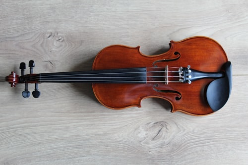
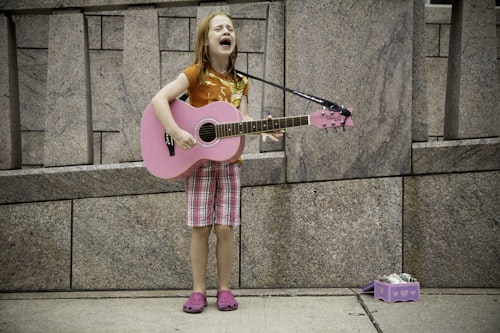

Medang • Pagedangan • Tangerang
Dari denting piano pertama sampai percaya diri di atas panggung. Setiap anak belajar mencintai musik dengan caranya sendiri.
4,7 di Google (100 ulasan) • 7 instrumen • terbuka untuk anak berkebutuhan khusus
● Kelas gitar di Denting
Program
Kurikulum mengikuti usia dan minat anak, dibimbing pengajar yang sabar dan berpengalaman.

Violin Melatih ketelitian, postur, dan kepekaan nada sejak dini. 05 Saxophone Pintu masuk ke dunia jazz: ekspresif, hangat, penuh gaya. 06
Vokal Teknik bernyanyi yang sehat dan percaya diri di depan audiens. 07 Drum Melatih ritme, koordinasi, dan menyalurkan energi anak.Kelas Inklusif
Kami percaya setiap anak berhak merasakan kebahagiaan bermusik. Kelas untuk anak berkebutuhan khusus dirancang dengan pendekatan yang sabar, ritme belajar yang fleksibel, dan suasana yang aman serta menyenangkan.
Konsultasikan Kebutuhan Anak AndaHangat seperti di rumah sendiri
Rumah, bukan sekadar les
Pengajar sabar & berpengalaman
Terbiasa mengajar anak dari berbagai usia dan kebutuhan.
Tiga aliran musik
Klasik untuk fondasi, pop untuk kesenangan, jazz untuk eksplorasi.
Lokasi strategis
Di Medang, Pagedangan, mudah dijangkau dari Gading Serpong & BSD.
Ulasan
Guru vokalnya enak ngajarnya dan bikin lebih pede waktu latihan.
Tempat belajar musiknya nyaman dan gurunya sabar ngajarin dari dasar. Cocok buat pemula.
Sudah beberapa bulan belajar di sini, gurunya friendly dan nggak bikin tegang.
Lokasi
Medang, Kec. Pagedangan, Kabupaten Tangerang, Banten 15334
Buka di Google MapsTanyakan jadwal, biaya, dan kelas yang paling cocok untuk buah hati Anda.
Chat via WhatsApp